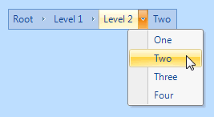
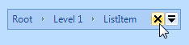

KryptonBreadCrumb
Use the KryptonBreadCrumb control to navigate around a tree hierarchy of options. The control displays a trail leading from the root to the currently selected location. This is useful in allowing the user to quickly navigate to a previous node in the path that leads to the current location. It also has the advantage of only taking up a small area of the screen, unlike a traditional tree control. Use the RootItem property to define the hierarchy and the SelectedItem property to define the current selection.
Appearance
Use the ControlBackStyle and ControlBorderStyle properties to define the styling required for control and the CrumbButtonStyle to define the appearance of each individual path entry. You can see in figure 1 the default appearance using the Office 2007 - Blue builtin palette.

Figure 1 – Default Appearance
Four States
The visual elements can be in one of four possible states, Disabled, Normal, Tracking and Pressed. The overall control can only be in the Normal or Disabled states but the individual crumbs, represented by drop down buttons, can also be in Tracking and Pressed states when interacting with the mouse.
In order to customize the appearance in each of the four states you can use the properties StateDisabled, StateNormal, StateTracking and StatePressed. Each of these properties allows you to modify the background, border and content characteristics of the drop down buttons as well as the border and background of the overall control.
Common State
To speed up the customization process an extra StateCommon property has been provided. The settings from this are used if no override has been defined for the state specific entry. Note that the specific state values always take precedence and so if you define the border width in StateNormal and StateCommon then the StateNormal value will be used whenever the control is in the Normal state. Only if the StateNormal value is not overridden will it look in StateCommon.
DropDownNavigation
By default this is defined as True and gives each individual bread crumb item a drop down button. When pressed the drop down button presents a context menu with a list of all available child items. On selecting one of the child items in the menu that child then becomes the newly selected item. Note that if a bread crumb item does not have any child items defined then it will not show a drop down button, even if this property is defined as True.
RootItem
This is the root item that starts the hierarchy of possible items. Each items has a ShortText, LongText and Image set of properties that are used to define the appearance of the item. Each item also has an Items property that allows child items to be attached. You can modify this hierarchy at design time to specify a fixed structure or alternatively modify the structure at runtime in response to application events.
SelectedItem
Use the SelectedItem to define the currently defined path in the control. Note that the reference MUST be one of the items inside the RootItem hierarchy. If you assign NULL then the control will be empty of any bread crumb displayed. If you assign the RootItem value then you will see a single bread crumb entry that represents the root of the available hierarchy. Otherwise you can assign one of the entries from the RootItem structure and it will show the entire path from the root to the provided reference.
ButtonSpecs
You can add buttons to the bread control control by modifying the ButtonSpecs collection exposed by the KryptonBreadCrumb. Each ButtonSpec entry in the collection describes a single button for display. You can use the ButtonSpec to control all aspects of the displayed button including visibility, edge, image, text and more. At design time use the collection editor for the ButtonSpecs property in order to modify the collection and modify individual ButtonSpec instances. See the ButtonSpec section for more details. Figure 2 shows an example of a KryptonBreadCrumb with buttons.

Figure 2 – KryptonBreadCrumb with ButtonSpecs
AllowButtonSpecTooltips
By default the control will not show any tool tips when you hover the mouse over the user defined button specifications. If you set this boolean property to True then it will turn on tool tips for those button specs. Use the ButtonSpec.TooltipText property in order to define the string you would like to appear inside the displayed tool tip.
AllowButtonSpecTooltipPriority
If the parent Item has tooltips, and the button spec has tooltips, then
the default is show both when hovering over the buttonspec. This can be disabled
by setting AllowButtonSpecTooltipPriority to true, so that only 1 tooltip is
displayed when hovering over any part of the control.
UseMnemonic
When this property is defined as True for the KryptonBreadCrumb it will check each of the ButtonSpec instances in the ButtonSpecs collection. If the Text or ExtraText in a ButtonSpec matches the incoming mnemonic then the Click event for the ButtonSpec will be fired.